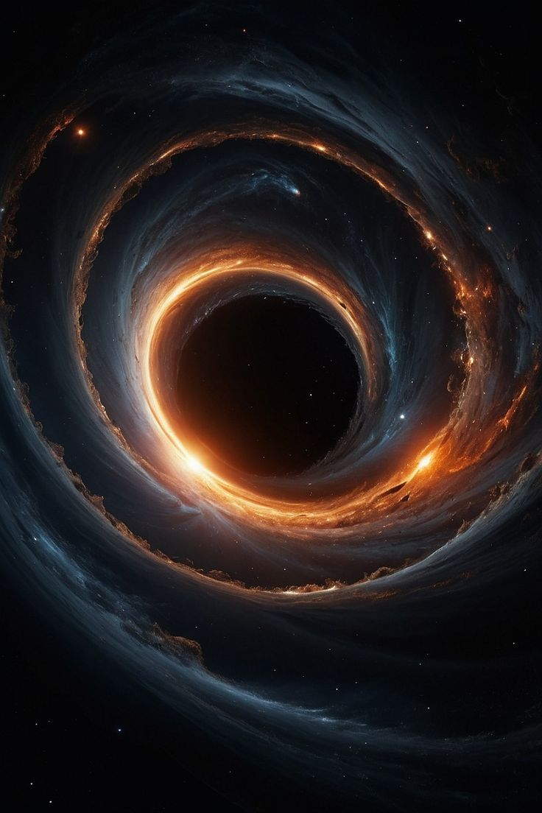

Как во Вселенной появляются черные дыры?
Жизнь черной дыры звездной массы начинается с гибели огромной звезды. Когда звезда исчерпывает свое термоядерное топливо, она больше не может сдерживать собственный вес. Происходит колоссальный взрыв — вспышка сверхновой!
Внешние оболочки звезды разлетаются по космосу, а ядро стремительно сжимается под действием гравитации в микроскопическую, но бесконечно плотную точку — сингулярность. Так на свет появляется новая черная дыра.
